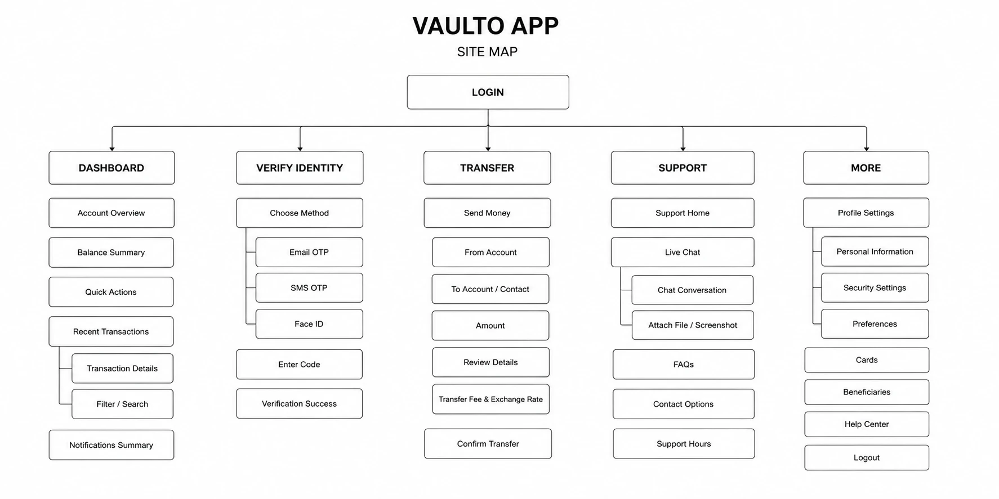
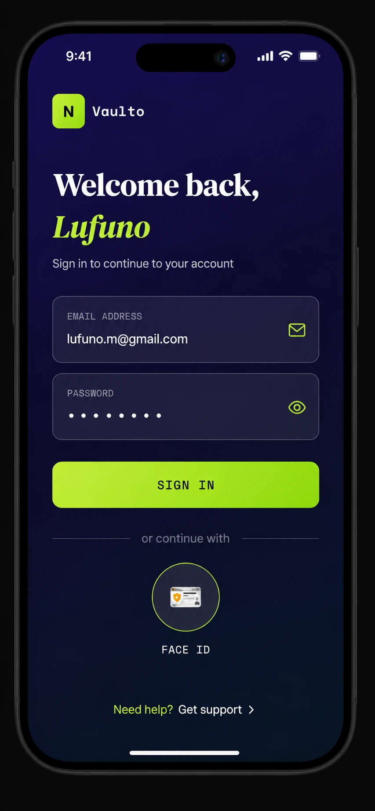
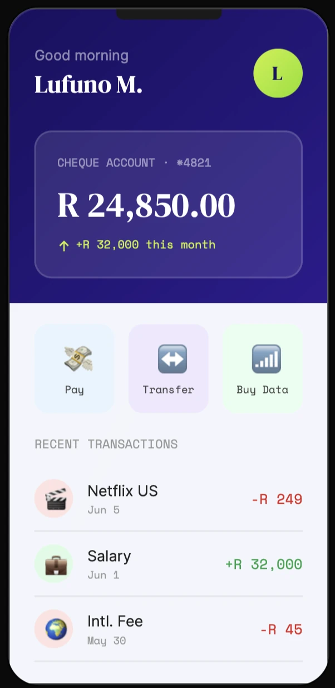
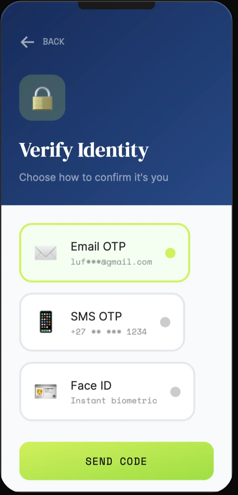
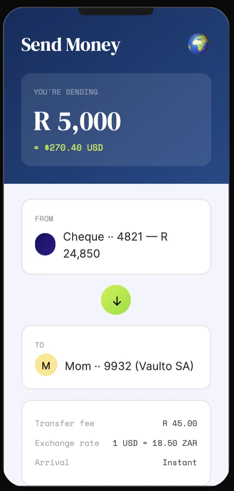
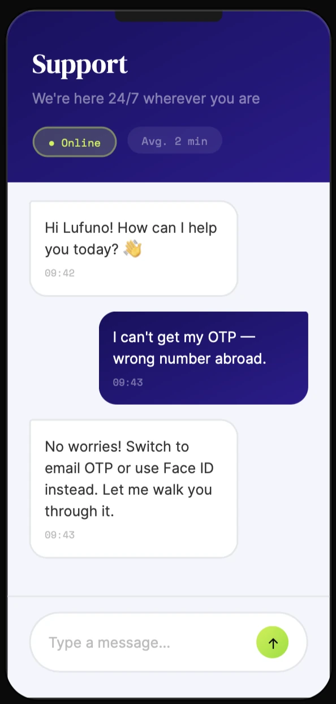

Overview
This case study explores how we can help users abroad access and recover their accounts with less stress.
Research · The problem
- OTP dependency creates anxiety when switching devices or SIM cards.
- Support feels limited for international users.
- Security versus convenience tradeoffs frustrate users daily.
- Users want more control over their account access options.
Research summary
- Time zones and unfamiliar branches add stress to the banking experience.
- SMS codes and OTPs are unusable without access to the registered local number abroad.
- Security is critical but rigid processes block legitimate users.
- Many users rely on family back home to manage their accounts.

User persona · Lufuno M.
Teacher living in the US
Goals
- Access her SA bank account while living in the US.
- Send money back home to family easily.
- Avoid account freezes due to inactivity.
Frustrations
- OTP sent to an inactive South African number.
- App locks out due to suspicious activity.
- No easy way to verify identity remotely.
Pain points
- Cannot access account without a local SIM.
- Long wait times with international support.
- High international transfer fees.
Needs
- Face ID or app-based authentication.
- An international support helpline.
- Flexible OTP delivery options.
User journey
01 · Discovery
User realises they need to access their SA account while abroad.
02 · Attempt
Opens the banking app and enters credentials.
03 · Blocked
OTP is sent to an SA number; the user cannot receive it in the US.
04 · Struggle
Contacts support, with long hold times and no resolution.
05 · Proposed resolution
A redesigned flow explores Face ID and an email OTP option.

Proposed key features
Face ID & biometrics
Explore device biometrics for sign-in on enrolled devices.
Email OTP fallback
Explore delivery to a registered email address when SMS is unavailable.
International support
A proposed 24/7 chat experience with guided identity verification.
Account recovery
Step-by-step account recovery designed for users across borders.
Flexible notifications
Choose how and where to receive alerts and supported authentication codes.
Trusted devices
Register trusted devices to reduce repeated verification at known logins.
Concept scope
These screens illustrate proposed journeys rather than a working banking service. Authentication and recovery choices would require security review and validation before implementation. No measured usability or security outcomes are claimed.
DESIGN GALLERY
A closer look.
Select any image to open it at full size. Screens show concept content.



